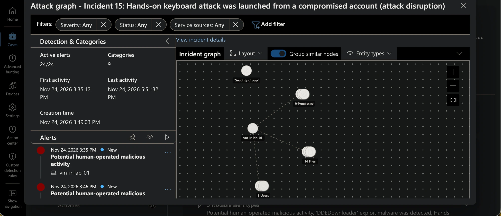

A four-step intrusion against a Windows Server protected by Defender for Endpoint, investigated starting from the alert alone. I wrote the detections, rebuilt the attack from the telemetry, contained and cleaned the host, turned the payload into a tenant-wide block and wrote it up as a post-incident report a client could act on. Every alert, timestamp and screenshot comes from my own lab machine.
The short, non-technical version. The full technical write-up follows below.
My earlier projects show I can build: identity governance, guardrails as code and a Sentinel SOC. SOC analyst roles ask for something else – investigating suspicious behaviour on an endpoint, and writing a report someone else can act on. This project practises those two things on one Windows Server 2022 VM in Azure, onboarded to Defender for Endpoint through Defender for Servers Plan 1.
The discipline: detections are written first, and the investigation starts from what fired, not from the attack script. The client and case (IR-2026-FIN042) are fictional; the telemetry is not. The attack ran on 24 November 2026 and the response on 25 November.
One chain, run as a single intrusion with Atomic Red Team – not four isolated tests. The run did not go to plan, and the write-up follows what happened.
| Step | Technique | MITRE ATT&CK | What happened |
|---|---|---|---|
| 1 | Encoded PowerShell downloads and starts a payload | T1059.001 | Ran. No built-in alert fired; custom rule 1 now covers it |
| 2 | Scheduled task persistence | T1053.005 | Ran. Raised the first alert of the chain |
| 3 | New local administrator account | T1136.001 | Ran. The account was never used to sign in |
| 4 | LSASS memory dump with a built-in tool | T1003.001 | Blocked by Defender Antivirus twice (comsvcs.dll MiniDump, then ProcDump) before the process started. No dump exists |
The planned starting alert never fired. Step 4 was chosen as a living-off-the-land dump so it would raise Defender's behavioural credential-theft alert, and the report was meant to start there. Because antivirus stopped both attempts before any LSASS handle was opened, that alert never came. The investigation started from the step 2 alert instead, and the report says so.
Field names come from the real events on the lab machine, not from documentation or guesses. Each rule maps the device and user so its alerts can join the incident.
| Rule | Catches | Severity | Verified on real data |
|---|---|---|---|
| 01 | PowerShell writes an .exe to a user's Temp folder | Medium | Yes – 1 row, the payload |
| 02 | schtasks /create with a shell as the action | Medium | Yes |
| 03 | net adds a local administrator | Medium | Yes, after tuning |
| 04 | LSASS dump tooling | High | ProcDump branch yes; the comsvcs.dll branch cannot be, because the attack was blocked |
net and net1 for each of two commands. An analyst would get four tickets for one event. The query now collapses rows by device, account and a 5-minute window and lists every command line; after saving, it raised one alert, which joined the main incident.Attack story first, then advanced hunting to confirm what the graph implies, then the device timeline to rebuild the order of events.

The incident graph for Defender incident 15 at the investigation stage (24 alerts; 26 after the indicator alerts were added). Times are shown in Sydney time (AEDT).
UserAccountCreated and the group changes at the exact second. I cannot tell whether I misread a partial view or the events had not landed; the result was kept only as a screenshot. Query results now go into a CSV.net user /add command line but left the password in clear text – in process events and on three nodes of the ungrouped incident graph. The name came from the localgroup command instead, and every screenshot was redacted before it left the portal.AlertInfo on when the custom alerts were raised returned nothing: for rules that backfill, the timestamp is when the event happened, hours earlier.Order followed: scope, contain, preserve, then clean up. Every live response command and its output is logged in the repository.
The portal is not the device. Three times the portal's view disagreed with the host: the containment did not stop new sign-ins, a restored file ran while its alert said blocked, and the incident stayed New through the whole response. Each was checked on the host and written into the report.
Measured from Defender incident 15 with the same definition as my Sentinel SOC project (acknowledge = first status change away from New).
| Measure | Value | What it shows |
|---|---|---|
| Time to contain (automatic) | 13 min 27 s | First chain alert to user containment |
| Time to acknowledge | 29 h 13 min 32 s | The incident stayed New until after the cleanup |
| Time to resolve | 29 h 26 min 37 s | First chain alert to Closed, true positive |
The long numbers measure the queue, not the work. Containment ran within minutes and the cleanup was done the next day, but nobody moved the incident out of New. I report the real figures and the reason, and one of the report's recommendations is to acknowledge and assign before acting. The ServiceNow ticket (INC0010004, New → In Progress → Resolved) was raised after the response, so its own timestamps measure the paperwork and are not used for these figures.
Stated openly so the scope of the claims is clear.